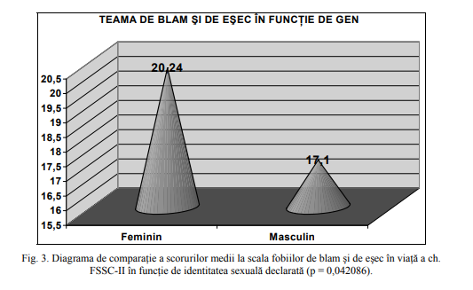

Teama de eşec
1.Introducerea
Cu toții avem vise și aspirații, dar suntem învățați încă de mici să trăim după anumite reguli și ajungem să credem că alegerea căii sigure ne poate asigura o viață bună. Cu timpul ne intrebăm dacă alegerile făcute sunt cele corecte. Într o societate focusată pe succes, posibilitatea de a eșuă este adesea minimalizată sau chiar negată.Aici intervine frica, principala barieră în îndeplinirea planurilor și atingerea succesului.Frică este o emoție subiectivă care poate să provoace schimbări atât la nivel fizic cât și la nivel mental. Teama poate trece de la una imperceptibila până la frică paralizantă.Atunci când emoțiile sunt foarte intense, vorbim de afecte sau emoții-șoc. O cunoscută formă a fricii este teama de eșec.
1.1.Ce este teama de eșec?
Teama de eșec este o condiție psihologică ce poate provoca o cantitate semnificativă de stres și este considerată motivul sau cauza eșecului, asociată și cu anticiparea rușinii. Dacă teama de eșec persistă și se extinde până la un stadiu anormal restricționând persoana din a acționa, atunci acest fenomen este numit Atychiphobia, o formă des întâlnită de fobie.În această situație, persoană afectată este aproape incapabilă să-și asume riscuri.
1.2.Diferențiere în funcție de sex:
Diferite teste și studii făcute pe stundenți, precum cel realizat de către Shelley Correll, arată că femeile au o teamă de a eșuă mai puternică decât bărbații, având așteptări și standarde mai ridicate.În acest studiu, persoane din ambele categorii de sexe au susținut un test scris.Participanții de sex feminim consideră că ar fi nevoie de un scor de minim 89 de puncte pentru a fi mulțumite, pe când participanții de sex masculin s-ar mulțumii cu un procentaj de 79 de puncte. Băieții preferă să repete sarcini la care au eșuat, pe când fețele aleg activitatiile în care au avut succes. Un alt factor ce poate influența diferențierea între sexe privitoare la teama de eșec este existanta stereotipurilor de gen. Femeile încearcă să compenseze această diferență prin diferite metode.În primul rând, unele persoane de sex feminim privesc succesul ca fiind mai potrivit bărbaților decât femeilor.O altă metodă este obținerea satisfacției prin realizările soțului sau ale copilului, unele femei valorificând mai mult aceste variante de împlinire decât propriile realizări.A treia metodă în acest sens este dată de înclinarea femeilor spre o carieră specific feminină, în care să aibă success.
1.3.Când şi unde apare teama de eşec?
Pentru ca un individ să simtă teama de eșec, trebuie să se petreacă două procese.Prima dată, acesta trebuie să anticipeze că eșecul este posibil sau probabil, iar apoi trebuie să considere că situația va avea una sau mai multe consecințe negative. Deci, teama de eșec apare când convingeri și scheme congnitive legate de consecințe negative sunt activate în situații în care eșecul este posibil. Adeseori temă de eșec este intalnită la elevi, antreprenori și sportivi, fiind implicați în situații cu un grad de stres mai ridicat.